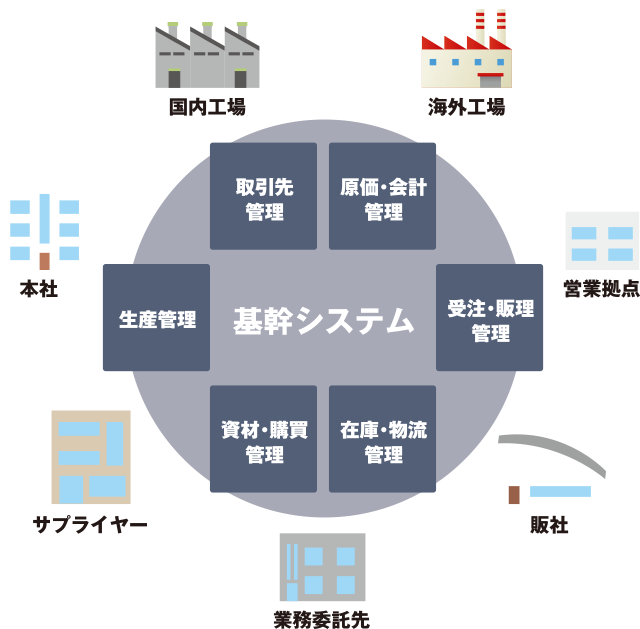

西日本情報システムは、お客様の抱える問題や課題を解決するために、長年蓄積した幅広い業務知識、ノウハウ、技術を駆使して、お客様の立場に立った最適なシステム開発を支援するサービスを提供しています。
開発実績はこちら →REBUILD
基幹システム 再構築ソリューション
現行の基幹システムが抱える問題や課題に対して、自社の強みを最大限に生かすスクラッチ開発、業務統一や開発効率向上のためのパッケージ利用、現行資産を最大限に活用するレガシーマイグレーション、それらを組み合わせたものなど、お客様にとって最適なソリューションをご提供します。

特徴
01
お客様の課題第一
経験豊富なSEがお客様の課題とニーズを的確に把握して、解決方法を一緒に考えます。
02
コストパフォーマンス
開発費、構築費、ライセンス料、保守料など全体コストを抑えた、末長く使えるシステムを提案します。
03
ユーザインタフェース重視
クラウド運用を見通したWebシステムおよび操作性、表現力の高いリッチクライアントツールを使用して構築します。
04
メインフレーム、オフコンからのマイグレーションも対応
COBOLなどの稼働資産をそのまま活用するマイグレーションも対応します。※詳細はレガシーマイグレーション作業一覧をご覧ください
レガシーマイグレーション作業一覧
| 1計画 | 資産分析・サンプル移行・移行計画 |
|---|---|
| 2設計 | 移行方式設計、運用設計、移行ツール設計、移行ツール作成 |
| 3移行作業 | パネル移行、プロシジャ移行、バッチ移行、対話移行、帳票移行、ファイル移行 |
| 4教育・引継ぎ | 教育・引継ぎ |
| 5環境構築 | テスト機環境構築、本番環境構築、環境構築資料作成 |
| 6プロジェクト管理 | 進捗管理、懸案管理等各工程のフォロー |
WEB SYSTEM
WEBシステム開発ソリューション
WEBシステムを効率的に操作・運用するために「快適な画面操作性」「アプリケーション安定性」「開発生産性」を「Biz/Browser」を中核として、ソリューションサービスを提供いたします。
- 快適な画面操作性
- アプリケーション安定性
- 開発生産性